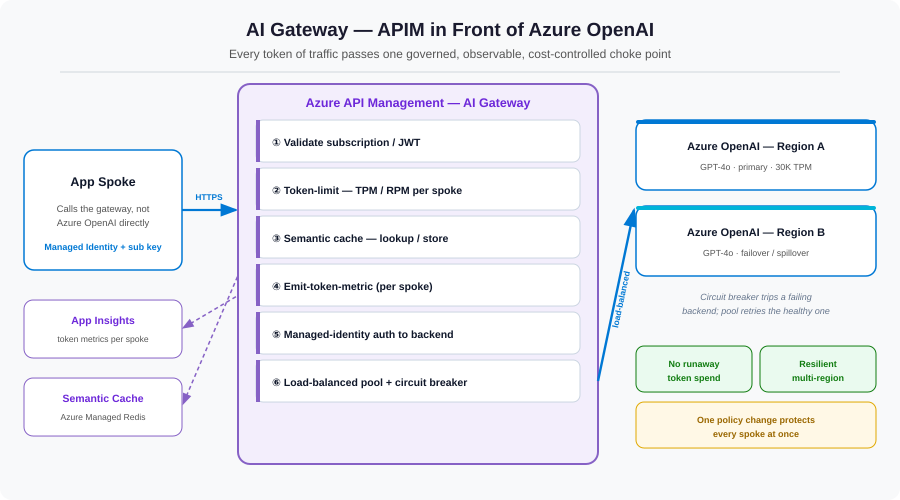

If the network is the foundation, the AI gateway is the control point. By routing every spoke through one Azure API Management front door instead of letting them call Azure OpenAI directly, a list of hard cross-cutting problems — fair quota sharing, cost, resilience, metering — collapse into policy configuration. This is the most leverage you'll get from any single component in the platform.
The problem: direct access has no governance surface
When a spoke calls Azure OpenAI directly, there is nowhere to enforce anything. You can't fairly divide the shared TPM pool, you pay full price for repeated near-identical prompts, you can't attribute spend to a team, and a regional outage takes the whole platform down. Every one of those is a policy that has nowhere to live. API Management gives it a home.

Five jobs the gateway does
1. Per-spoke token limits — making shared quota safe
This is the policy that resolves the shared-quota risk we left open in Part 3. The azure-openai-token-limit policy counts tokens per a key you choose — the spoke's subscription — and throttles a noisy spoke without touching the others.
2. Semantic caching — paying once for the same answer
LLM calls are expensive and slow, and in practice many prompts are near-duplicates. Semantic caching embeds the incoming prompt, compares it to recent prompts, and if the similarity clears a threshold, returns the cached completion — no model call at all.
3. Token metering — turning usage into chargeback
The azure-openai-emit-token-metric policy emits prompt/completion token counts to Application Insights, dimensioned by spoke. That single line is what makes the FinOps story in Part 6 possible.
4. Managed-identity backend auth — no keys, ever
Because we disabled local auth on Azure OpenAI in Part 3, the gateway authenticates to the backend with its own managed identity using authentication-managed-identity. The spoke proves who it is to APIM; APIM proves who it is to Azure OpenAI. No API key exists anywhere in the path.
5. Load-balanced backends — resilience by configuration
Define a backend pool of two or more regional Azure OpenAI deployments with circuit breaker rules. APIM spreads load and, when one region returns 429s or errors, trips the breaker and routes to a healthy region automatically.
It's one policy document
What's striking is that all five jobs live in a single, readable APIM policy. Here is the shape of it — inbound governance, backend auth and routing, outbound caching and metering:
<policies>
<inbound>
<base />
<!-- Identify the calling spoke -->
<validate-jwt header-name="Authorization" failed-validation-httpcode="401" />
<!-- 1. Fair-share the shared TPM pool, per spoke -->
<azure-openai-token-limit
counter-key="@(context.Subscription.Id)"
tokens-per-minute="6000"
estimate-prompt-tokens="true"
remaining-tokens-header-name="x-tokens-remaining" />
<!-- 2. Serve semantically-similar prompts from cache -->
<azure-openai-semantic-cache-lookup
score-threshold="0.95"
embeddings-backend-id="embeddings-backend" />
</inbound>
<backend>
<!-- 4. Authenticate to Azure OpenAI with APIM's managed identity -->
<authentication-managed-identity resource="https://cognitiveservices.azure.com" />
<!-- 5. Spread load across regional backends with circuit breaking -->
<set-backend-service backend-id="openai-pool" />
<forward-request />
</backend>
<outbound>
<base />
<!-- 2. Store the completion for future similar prompts -->
<azure-openai-semantic-cache-store duration="120" />
<!-- 3. Meter token usage per spoke for chargeback -->
<azure-openai-emit-token-metric namespace="ai-gateway">
<dimension name="spoke" value="@(context.Subscription.Name)" />
</azure-openai-emit-token-metric>
</outbound>
</policies>Five governance capabilities, one declarative document — versioned in Git like any other config.
What this layer bought us
| Policy | Capability | Problem it solved |
|---|---|---|
azure-openai-token-limit | Per-spoke rate limiting | Noisy-neighbor quota starvation |
| Semantic cache lookup/store | Response caching | Cost & latency on repeat prompts |
azure-openai-emit-token-metric | Usage metering | No cost attribution / chargeback |
authentication-managed-identity | Keyless backend auth | API-key handling & leakage |
| Backend pool + circuit breaker | Load balancing & failover | Single-region fragility |
References
- GenAI gateway capabilities in API Management
- azure-openai-token-limit policy
- azure-openai-emit-token-metric policy
- Semantic caching policies
- Backends & load balancing in API Management
What's next
The gateway keeps referring to identities — "the spoke proves who it is," "APIM uses its managed identity." In Part 5 we make that concrete: the end-to-end identity and security model, where managed identities and granular RBAC replace every key and connection string in the platform.